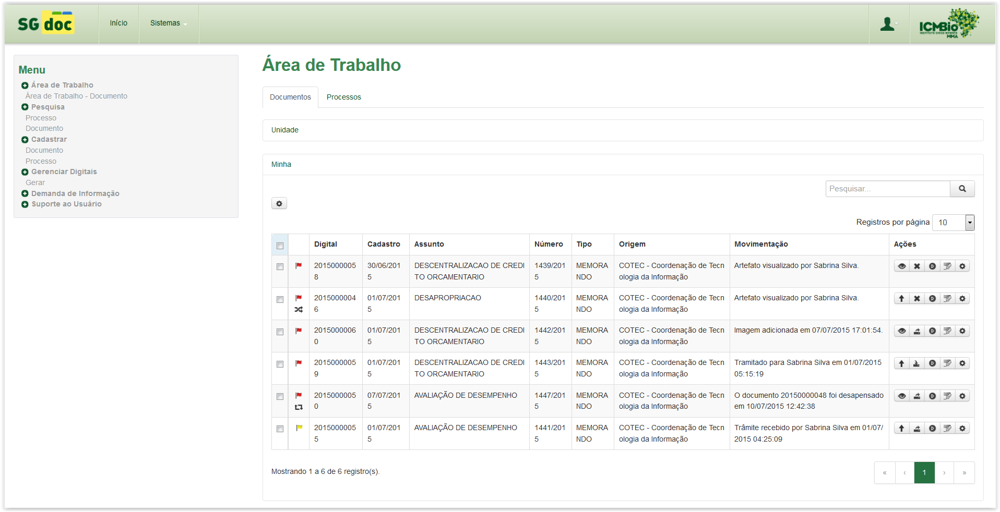
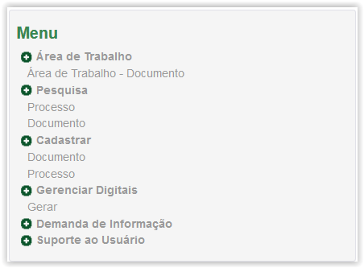
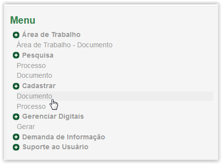
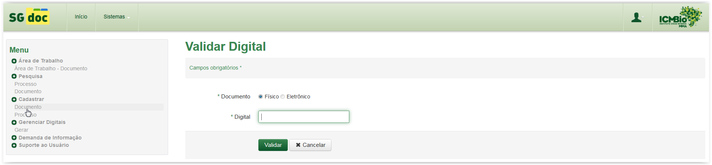

Menu
Por meio do Menu é possível acessar as funcionalidades do sistema. O Menu fica localizado à esquerda da tela:

Sistema SGDoc

Menu do Sistema SGDoc
Para acessar, por exemplo, a funcionalidade Cadastrar Documento, posicione o mouse e clique em cima do nome desejado:

Menu do Sistema SGDoc - Acessar a funcionalidade Cadastrar Documento

Exibindo a funcionalidade Cadastrar Documento
Created with the Personal Edition of HelpNDoc: Single source CHM, PDF, DOC and HTML Help creation